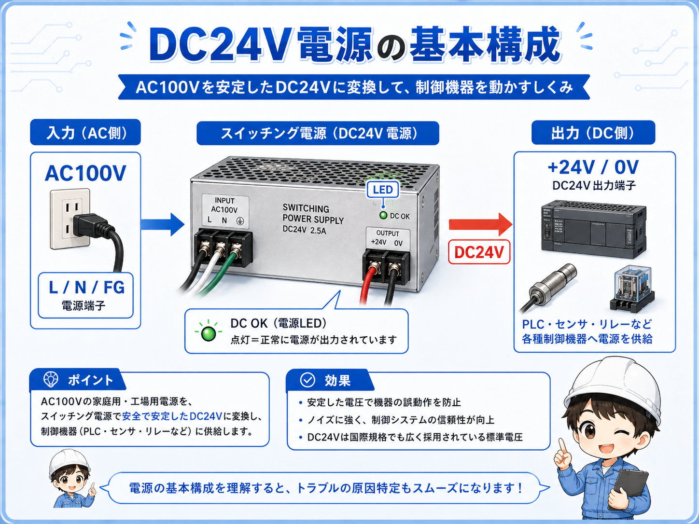
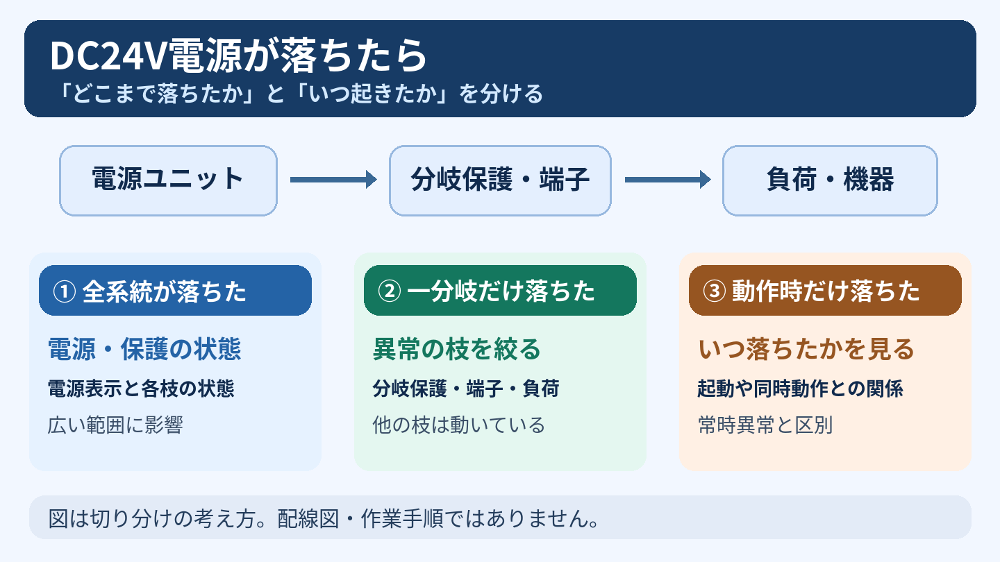

DC24V電源は制御機器の土台になる電源
DC24V電源は、PLC、センサー、リレー、電磁弁、表示灯など、制御盤の中で多くの機器に使われる電源です。 ここが不安定になると、入力が入らない、出力が動かない、センサーが誤動作するなど、いろいろな不具合につながります。
電源が落ちる時は、電源ユニット本体だけでなく、 どの負荷をつなぐと落ちるのか、どこで電圧が下がっているのか を分けて見ることが大切です。

電源本体と負荷側を分ける
電源ユニットだけが悪いとは限りません。負荷側の短絡、過負荷、配線ミス、端子ゆるみ、センサーや電磁弁の故障でもDC24Vが落ちることがあります。

後輩DC24Vが落ちる時は、電源ユニットを交換すれば直ると思っていました。

先輩電源本体の故障もあるけど、負荷側の短絡や過負荷で保護が働いていることも多いよ。まず負荷を分けて確認しよう。
DC24V電源から負荷までの流れ
DC24V電源は、電源ユニットから端子台、ヒューズ、分岐端子などを通って、PLC、センサー、電磁弁、リレーなどへ配られます。 途中のどこかで短絡や過負荷があると、電源が落ちたり、電圧が下がったりします。
| 見る場所 | 確認すること | よくある状態 |
|---|---|---|
| 電源ユニット | 入力電源、出力電圧、異常表示 | 一次側電源なし、保護動作、容量不足 |
| 端子台・分岐 | 24Vと0Vの分岐先、端子ゆるみ | 端子ゆるみ、線番違い、分岐先の短絡 |
| 保護機器 | ヒューズ、サーキットプロテクタ、回路保護 | ヒューズ切れ、過電流トリップ、負荷側短絡 |
| 負荷側 | センサー、電磁弁、リレー、PLC入力出力 | 機器故障、ケーブル損傷、配線ミス、過負荷 |
どの系統で落ちるかを見る
全体のDC24Vが落ちるのか、特定の分岐だけ落ちるのかで、確認する場所が変わります。負荷を分けて追うと原因を絞りやすくなります。

0V側も忘れずに見る
24V側だけでなく、0V側の端子ゆるみや断線、共通線の不良でも機器が正常に動かないことがあります。
症状を「どこまで」「いつ」で分ける
まず同じ電源につながるどの機器が止まったかと、いつ止まったかを記録します。動作時だけの異常は、全系統・一分岐のどちらでも起きます。範囲とタイミングは別々に整理します。
| 見え方 | 原因の候補 | 最初に照らし合わせる情報 |
|---|---|---|
| 同じ電源の全系統が落ちる | 入力電源の異常、電源の保護動作、電源故障、共通配線の異常 | 電源表示、複数の分岐の状態、異常履歴 |
| 一分岐だけ落ちる | 分岐保護の動作、端子・配線・負荷の異常 | 分岐名と保護表示、その下流の機器 |
| 負荷が動く時だけ落ちる | 起動時の突入電流、同時動作による負荷増加、配線・端子での電圧降下 | 動いた機器と時刻、電源元と負荷端の状態の違い |
「電源元も低下」と「負荷端だけ低下」は別
同じ時刻に電源元の出力も低ければ、入力・電源保護・総負荷が候補です。電源元が保たれ、負荷端だけ低ければ、分岐・端子・配線を疑います。どちらも原因の確定ではありません。出力表示が点灯していても、負荷側の電圧や瞬間的な低下まで正常とは限りません。
DC24V電源が落ちる時の確認手順
停止の範囲と発生のタイミングを整理し、図面で「電源ユニット → 分岐保護・端子 → 負荷」の対応を確かめます。

1. 停止範囲を記録する
制御盤の外から見える表示や設備の異常履歴で、どの分岐まで影響したかを整理します。複数の電源がある設備では、同じ電源から供給される系統かを図面で確認します。
2. 発生時刻と動いた機器をそろえる
異常記録から、投入時・機器の起動時・同時動作時のどれかを見ます。復帰していても、原因を再現するための再投入・試運転は行わず、記録を保全担当者へ引き継ぎます。
3. 電源と分岐保護の型式を確認する
保護表示だけで短絡・過負荷・電源故障は確定できません。電源と分岐保護の型式、異常表示、影響範囲を記録し、対象機種の説明書と照合します。
盤内作業は保全担当者へ
DC24Vでも、盤内にAC入力や別系統がある場合があります。このページは通電中の測定・配線の抜き差し・保護の解除を案内しません。異臭、焦げ、発熱や繰り返すトリップがあるときは再投入せず、現場手順に従い、点検と復旧は資格・権限のある担当者へ引き継いでください。
よくある原因と見落としポイント
DC24Vが落ちる原因は、電源ユニットの故障だけではありません。 実際には、負荷側の短絡、配線ミス、端子ゆるみ、機器故障、容量不足など、周辺条件で落ちていることが多いです。
電源ユニットだけを疑ってしまう
電源が落ちると本体故障を疑いたくなりますが、電源本体の故障と決めつけず、分岐の状態と発生時刻を確認します。復帰したという事実だけで負荷側が原因とは断定できません。
24V側だけ見て0V側を見ていない
0V共通線のゆるみや断線があると、機器が不安定になったり、入力や出力が正しく動かないことがあります。
電源元の状態だけで判断する
電源ユニットの出力端子では24Vがあっても、遠い負荷や細い線、端子ゆるみの先で電圧が下がっている場合があります。
動作時だけ落ちる原因を見落とす
電磁弁やリレーが同時に動いた時だけ落ちる場合は、電源容量、突入電流、配線の太さ、分岐の取り方も確認します。
後輩表示が復帰していたら、もう正常と見ていいですか？
先輩復帰したことと原因がなくなったことは別だよ。止まった機器と時刻、型式を記録して、保護の復帰条件は説明書で確かめよう。
現場での見方のコツ
DC24V電源のトラブルは、全体の電源が落ちているのか、特定の負荷だけ動かないのかで見方が変わります。 誰が確認しても同じ系統を追えるように、影響した範囲と直前の状況を残します。
電源元と末端を区別する
電源元が正常でも負荷端まで正常とは限りません。保全担当者の確認結果は、記録した場所・時刻・機器名がそろって初めて比較できます。
分岐名・線番を確認する
どの端子台からどの機器へ電源が行っているか、線番と図面を照合します。
復帰した条件を残す
自動で表示が戻ったのか、設備側の復旧作業後に戻ったのかを分けて記録します。表示が戻っても再起動や運転許可の確認は設備側の手順に従います。
直前の作業を確認する
センサー交換、配線追加、端子台作業、電磁弁交換の直後なら、その作業箇所を優先して確認します。

「電源元」「分岐」「末端」で分ける
DC24Vトラブルは、電源元で出ているか、分岐で落ちるか、末端で下がるかを分けると、原因を追いやすくなります。
メーカー公式資料・技術参照元
たとえばオムロンのS8VK-G・S8VK-Sでは過電流保護が自動復帰と記載されていますが、同シリーズでも過電圧保護は出力遮断後の復帰条件が別です。これは機種例であり、すべての24V電源・分岐保護で同じ動作をするわけではありません。
- オムロン S8VK-G 定格／性能：過電流保護、過電圧保護、出力表示。
- オムロン S8VK-S 定格／性能：24V仕様、保護の種類。不足電圧検出出力は30～120Wタイプにはなく、240・480Wタイプにはある。
公式資料確認日：2026年11月20日。現在の設備に適用する条件は、実際の型式ごとの説明書を確認してください。
あわせて読みたい関連記事
DC24V電源の確認は、電源ユニット、ヒューズ、サーキットプロテクタ、端子台、PLC入力の理解とつながっています。あわせて読むと、現場での切り分けがしやすくなります。
PLC入出力トラブルシューティングの基本
入力・出力・電源・COM・機器を横断して、原因領域を整理する入口として使えます。

DC24V電源の基本
DC24V電源の役割や使われる場所を、基礎から整理したい時に役立ちます。
サーキットプロテクタの基本
DC24V系統の保護やトリップ確認に関係する部品の基礎です。
ヒューズホルダーの基本
ヒューズ切れや分岐保護を確認する時に役立つ基礎記事です。
端子台の基本
24Vと0Vの分岐、端子ゆるみ、線番確認に関係する基礎です。
PLC入力が入らない時の確認手順
DC24V電源不良がPLC入力に影響している時の確認にもつながります。
テスターの基本
DC24Vの電圧確認や導通確認をする時に必要なテスターの使い方です。